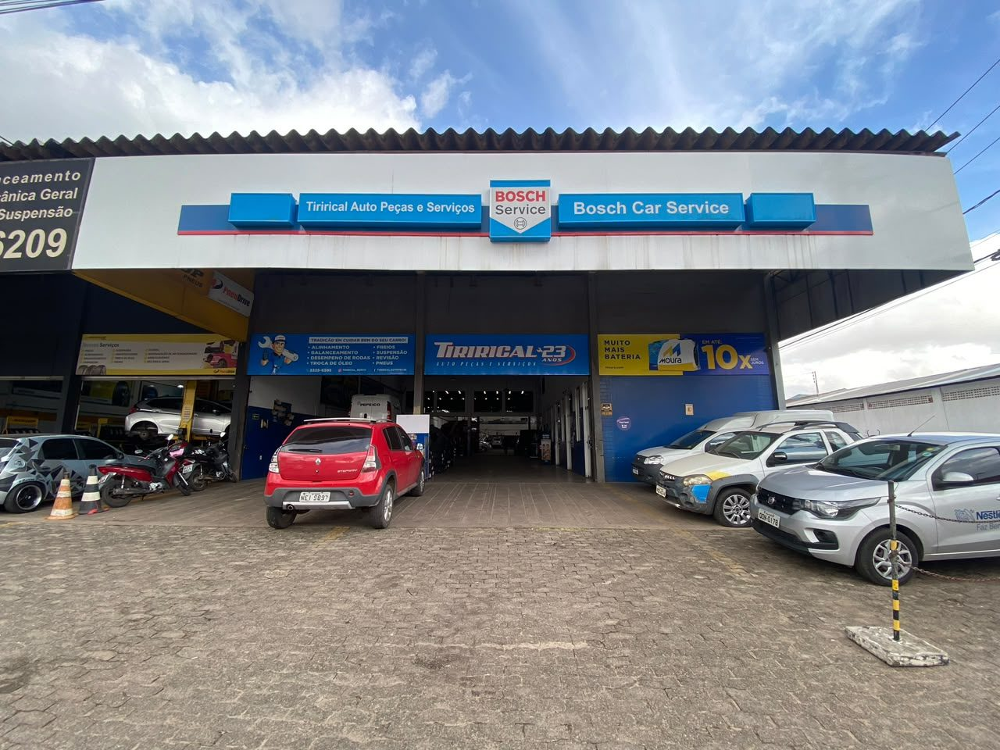
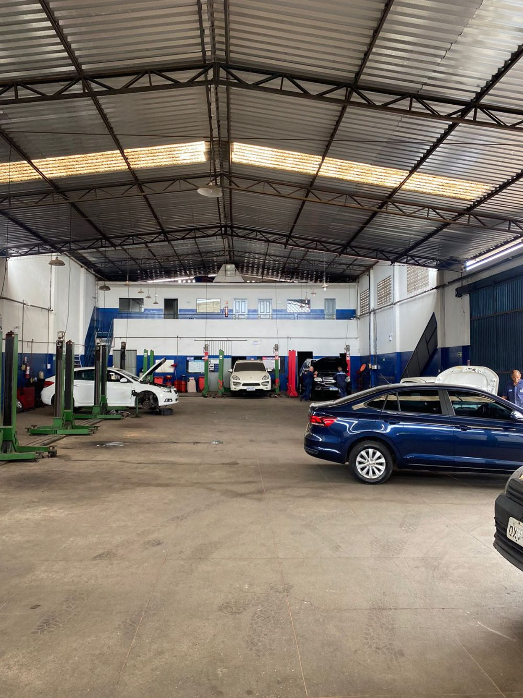
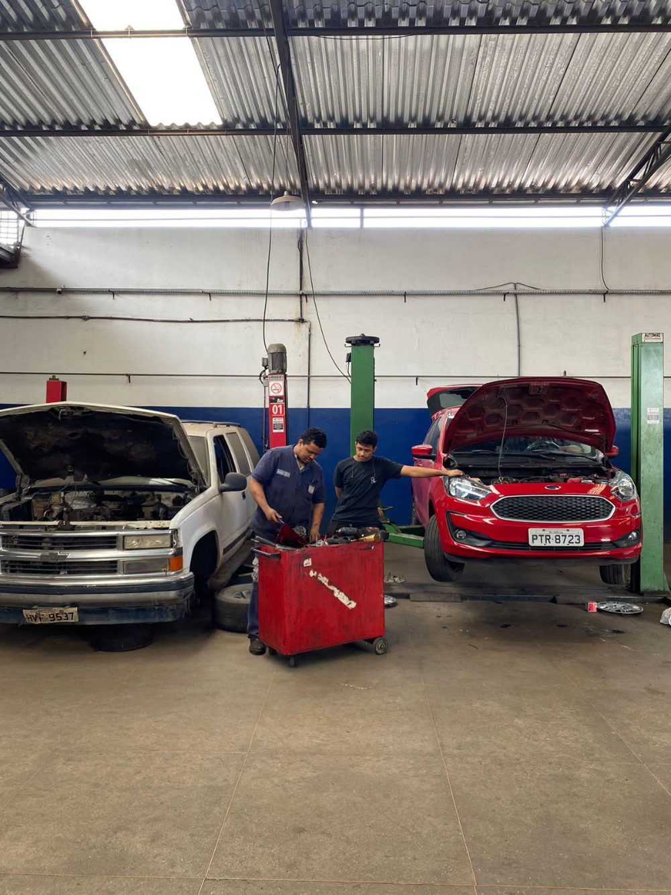
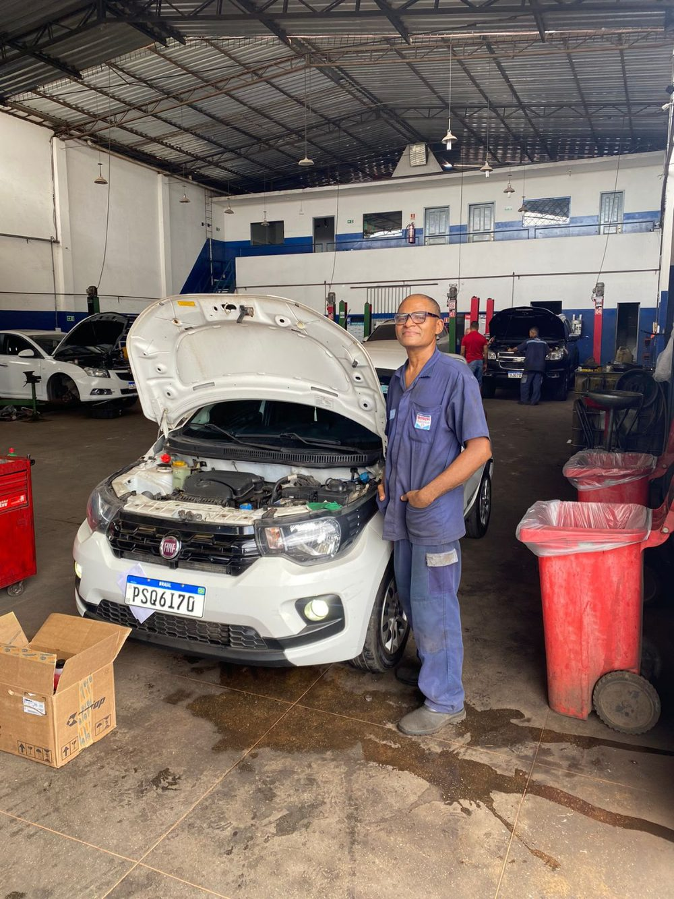
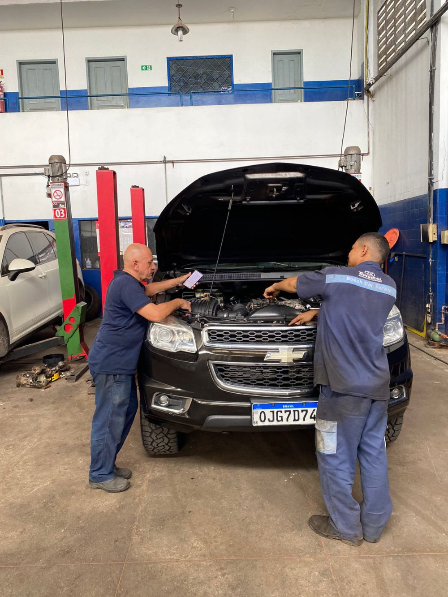
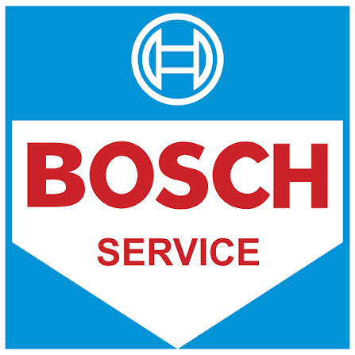

Serviços, produtos e o rigor técnico Bosch Car Service, com atendimento de quem conhece os clientes pelo nome.
Há 28 anos a Tirirical atende São Luís com manutenção e diagnóstico automotivo, e hoje também vende pneus Yokohama e Prinx e produtos Liqui Moly.
Você chega com um problema, a equipe explica o que encontrou, quanto custa e o que vale a pena fazer. A decisão é sempre sua.

Fotos reais do dia a dia da equipe Tirirical.




Oficinas credenciadas seguem padrões técnicos definidos pela Bosch: equipamentos homologados, técnicos certificados e processos alinhados às recomendações dos fabricantes.

Oficina credenciada · São Luís, MA
Atendimento pelo WhatsApp, pagamento em até 10x sem juros nos cartões.